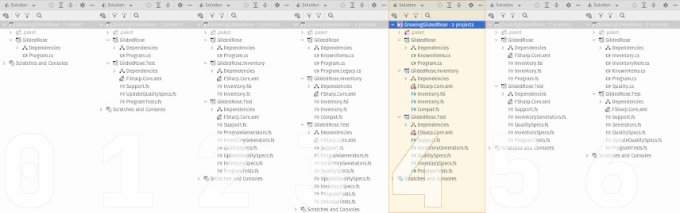

This is part four-of-four in the series, Growing a Gilded Rose. Over the course of these four blog posts, I hope to demonstrate incrementally improving a legacy code base which has thorny requirements, while also presenting a few different software development tools or concepts. The full series is as follows:
- Make it Testable
- Next Year's Model
- When Worlds Collide
- A New Requirement Appears (this post)
Bonus Content

Overview
The time has come! The time is now! We're finally going to address the most important part (ostensibly) of the Gilded Rose Kata! Specifically, we will add a new kind of item -- “conjured” items -- to our inventory. Further, since the quality of a conjured item depreciates two times the rate of a normal item, we will have to modify some of the core business logic. And, as is typical, we'll adjust the test suite to properly exercise our changes.
You may recall: last time we integrated a new model into the legacy program.
One of the major motivations for introducing said model is to facilitate safer
and simpler maintenance. So now we can really put that to the test. Should you
wish to revisit the previous work, it is available in the
companion repository, in a branch called 3_coalesce.
A Bit of Housekeeping
We could just dive right into tweaking things. But, in an effort to keep the
solution tidy, let's first delete all the things we don't need. Like what?
Well, we've comfortably proven out the new model. So, we can delete the legacy
method UpdateQuality. In fact, if we kept the method, we'd also have to modify
its logic -- or face a bunch of failing tests. Since we moved the method to
its own file, we can simply delete Program.Legacy.cs from the GildedRose
project. Dropping this method means we can also remove the partial keyword from
the Program class (everything's back to a single file, Program.cs).
There's some further cleaning to be done in the test suite, as well. Specifically, we can delete the following files:
| File Name | Explanation |
|---|---|
OracularTests.fs |
Can't have an oracular test if you deleted the oracle |
UpdateQualitySpecs.fs |
These tests all assert properties of method which no longer exists |
ProgramGenerators.fs |
We no longer need to generate specific instances of GildedRose.Item |
Now, with this bit of de-cluttering behind us, let's forge bravely forward and add that new kind of inventory.
A Feature Conjured
Given all the work we've put in, adding conjured items requires only three small
changes to the GildedRose.Inventory project:
- Add an additional variant to the
Itemdiscriminated union. - Add a new branch in
updateItemto deal with the new variant. - Extend the C#-compatibility layer (
Compat.fs) to account for the new variant.
First, we'll modify the signature file, Inventory.fsi, such that Item now
looks like this:
/// Tracks the category, name, value, and "shelf life" of any inventory.
type Item =
/// An item with a constant value and no "shelf life".
| Legendary of name : string * quality : MagicQuality
/// An item whose value decreases as its "shelf life" decreases.
| Depreciating of name : string * quality : Quality * sellIn : int32<days>
/// Just like depreciating item -- but quality decreases twice as fast.
| Conjured of name : string * quality : Quality * sellIn : int32<days>
/// An item whose value increases as its "shelf life" decreases.
| Appreciating of name : string * quality : Quality * sellIn : int32<days>
/// An item whose value is subject to complex, "shelf life"-dependent rules.
| BackstagePass of name : string * quality : Quality * sellIn : int32<days>
With the addition of lines 9 and 10, we've now provided the means to create and
process a new kind of item (n.b. we won't show it here, but line 10 also needs
to be added to the implementation file, Inventory.fs). If you were to make
only this change and compile the solution, you would see two warnings (or
possibly errors, depending on your build settings) like the following
(formatted here for display purposes):
Inventory.fs(48, 9): [FS0025] Incomplete pattern matches on this expression. For example, the value 'Conjured (_, _, _)' may indicate a case not covered by the pattern(s).
This is just the compiler's way of letting us know we need to change the
updateItem function to account for the new item variant. Lines 11, 12, and 13
in the following snippet sufficiently encode the relevant logic.
let updateItem item =
// ... other code elided ...
match item with
| Legendary _ -> item
| Depreciating (name, quality, Aged sellIn') ->
let quality' = quality - Quality.Of(rateOfChange sellIn')
Depreciating(name, quality', sellIn')
| Conjured (name, quality, Aged sellIn') ->
let quality' = quality - Quality.Of(2uy * rateOfChange sellIn')
Conjured(name, quality', sellIn')
// ... other code elided ...
As you can see, conjured item are handled almost exactly the same as their
depreciating counterparts. The only real difference: quality decreases twice as
fast. This is accomplished by multiplying the standard rateOfChange by 2
(line 12). So, where a depreciating item's quality is reduced by 1 or 2 units,
a conjured item's quality is reduced by 2 or 4 units. Everything else about
the updateItem function remains the same, and was explained in an earlier post.
Finally, we jump over to the file Compat.fs to make ensure C# consumers will
be able to correctly access conjured item data. As the next code sample shows,
on line 15, the Conjured variant is decomposed as part of a multi-case match,
and its constituent data is then assigned to the appropriate output parameters.
static member Deconstruct
(
item : Item,
name : outref<string>,
quality : outref<byte>,
sellIn : outref<int>
)
=
match item with
| Legendary (name', quality') ->
// ... details elided ...
| BackstagePass (name', quality', sellIn')
| Appreciating (name', quality', sellIn')
| Conjured (name', quality', sellIn')
| Depreciating (name', quality', sellIn') ->
name <- name'
quality <- byte quality'
sellIn <- int sellIn'
With these changes in place (in total, only seven new lines of code), the new kind of inventory item has been effectively implemented. Request complete. Feature delivered. Well, except for the tests, that is. 😉
And the Tests Need Updating
Given the modularization and compartmentalization of the inventory library, we
only need to add two tests in order to cover the inclusion on conjured items.
We will add both tests to the file, UpdateItemSpecs. The first of these is as
follows:
[<Property>]
let `after +N days, conjured item has lesser quality`
(OnlyConjured item)
totalDays
=
let item' = item |> advanceBy totalDays
match (item, item') with
| Conjured (quality=quality ),
Conjured (quality=quality') ->
(quality' < quality || quality' = Quality.MinValue)
|@ $"{nameof quality}: {quality'} ≮ {quality} ∧ ¬{nameof Quality.MinValue}"
| ItemKind case, ItemKind case' ->
false |@ $"Unexpected variant: {case} is not {case'}"
This test is, unsurprisingly, written is the same manner as a very similar
test for depreciating items. We begin by receiving a randomly-generated
Conjured instance (item, line 3) and a positive number of days over which the item
should be aged (totalDays, line 4). Then, on line 6, we apply the aging process, which results in a new inventory instance (item'), with updated “shelf life” and quality. Next, on line 11, we compare the old and new items'
qualities (quality and quality', respectively), ensuring the updated amount
is less than the original (“less” because a conjured item's value only decreases over time).
Having the above test is good, but it only validates the direction of change. We now add another test which covers the rate of change for a conjured item.
[<Property>]
let `after +1 days, conjured item has 0 <= abs(quality change) <= 4`
(OnlyConjured item)
=
let item' = item |> advanceBy (PositiveInt 1)
match (item, item') with
| Conjured (quality=quality ),
Conjured (quality=quality') ->
let delta = (quality - quality') |> byte |> int |> abs
(0 <= delta && delta <= 4)
|@ $"{nameof quality}: |{quality} - {quality'}| ∉ {{0, 1, 2, 3, 4}}"
| ItemKind case, ItemKind case' ->
false |@ $"Unexpected variant: {case} is not {case'}"
As with the previous test, we instruct FsCheck to generate a new Conjured
instance for us, on line 3. However, the item only needs to be “aged” by one day; so that
can be hard-coded when we apply the actual aging process (on line 5). Once we
have extracted the old and new qualities from the two conjured items, we
compute the absolute value of their difference (delta) on line 10. We then
assert that delta is not less then zero and not more than four (line 11).
Thus, we've validated that the rate of a conjured item's quality changes within
expected tolerances.
Conclusion
It seems like all the meticulous testing and refactoring performed over the past few blog posts was worth it in the end. We were able to add business value and reduce maintenance burden. And now everyone can enjoy shiny new “conjured” items at the Gilded Rose Inn.
This also marks the end of this blog series (or is it? 😉). Starting from a messy-but-functional legacy code base, we:
- Enabled testability
- Introduced a new programming language
- Flirted with approval testing
- Explored property-based testing
- Let empirical knowledge drive refactoring
- Learned how to integrate C# and F#
What's more, we effectively combined all of the previous points to greatly improve our ability to confidently respond to the changing demands of business. And we managed to avoid angering the goblin in the corner. Yay! We hope Leeroy would be proud (even if we expect he'd complain we "over-thought everything").
Hopefully, you, dear reader, found this series of blog posts informative and
entertaining. If so, you might enjoy a few “What If?”-style alternative approaches.
There's one focused on completely removing C# from the solution. And going
in the opposite direction, there's one about completely removing F# from
the solution. In any case, you may find all of the code listed above, plus
addition tests and utilities, in the companion repository, in a branch
called 4_extended. Finally, there's also a discussion forum for
this blog series at the companion repo, if you have questions or want to share
feedback. Have fun, and happy coding!